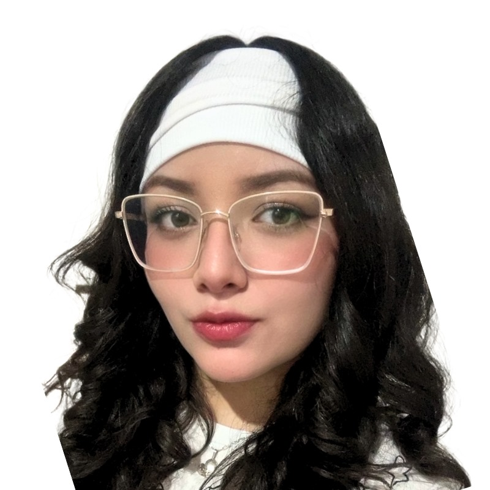

Reclutamiento y selección
Publicación de vacantes, revisión de CV, entrevistas, recomendación de finalistas y coordinación de ingresos.
Personas · Procesos · Talento
Hola, soy Marina Trinidad Barreiro Vargas.
Soy licenciada en Psicología y técnica en Administración de Recursos Humanos. Tengo experiencia coordinando procesos de selección de principio a fin, dando seguimiento a candidatos, organizando información y acompañando la operación de RH con un enfoque humano y estructurado.

Integro la escucha y el análisis de la Psicología con tareas concretas de reclutamiento, operación administrativa y seguimiento de equipos.
Publicación de vacantes, revisión de CV, entrevistas, recomendación de finalistas y coordinación de ingresos.
Registro y seguimiento de cobertura de vacantes, rotación, incidencias y clima laboral.
Control de procesos en Google Sheets, registros de asistencia, documentación y reportes de seguimiento.
Colaboración con instructores para preparar y organizar materiales de formación, incluidos recursos en Canva.
Seguimiento oportuno a candidatos, comunicación interna y coordinación con distintas áreas.
Experiencia trabajando con expedientes y datos sensibles, cuidando el orden documental y la privacidad.
Etapas de un proceso de reclutamiento que coordiné en mi experiencia profesional. Mi prioridad es dar claridad y seguimiento a cada paso.
Difusión de vacantes según las necesidades del puesto.
Revisión y organización de perfiles candidatos.
Evaluación inicial y registro de información relevante.
Recomendación y comunicación de perfiles seleccionados.
Seguimiento del proceso de incorporación y registros.
He trabajado con perfiles diversos, procesos administrativos y atención profesional, siempre con enfoque en el seguimiento y la comunicación.
Coordiné selección de perfiles de RH, administración, TI (bases de datos y desarrollo web), marketing, ventas e instructores.
Realicé entrevistas clínicas y atención psicológica con enfoque cognitivo-conductual. Elaboré planes de intervención personalizados y administré expedientes digitales con confidencialidad.
Redacción de documentos y reportes, control de asistencia, organización de archivos, comunicación interna y apoyo logístico en eventos institucionales.
Recursos que he utilizado para organizar información, colaborar con equipos y dar seguimiento a procesos.
Español: nativo.
Inglés: intermedio (lectura, comunicación escrita y conversación básica).
Nota de privacidad: los procesos reales de selección y expedientes de candidatos se describen sin compartir datos personales ni documentos confidenciales.
Estoy interesada en oportunidades de Recursos Humanos, reclutamiento, selección, operaciones de talento y coordinación administrativa. Si mi perfil encaja con tu equipo, estaré encantada de conversar.
marina.trinidad.bv@gmail.com